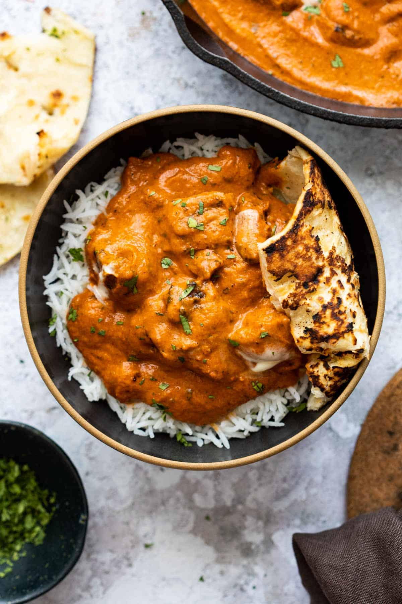
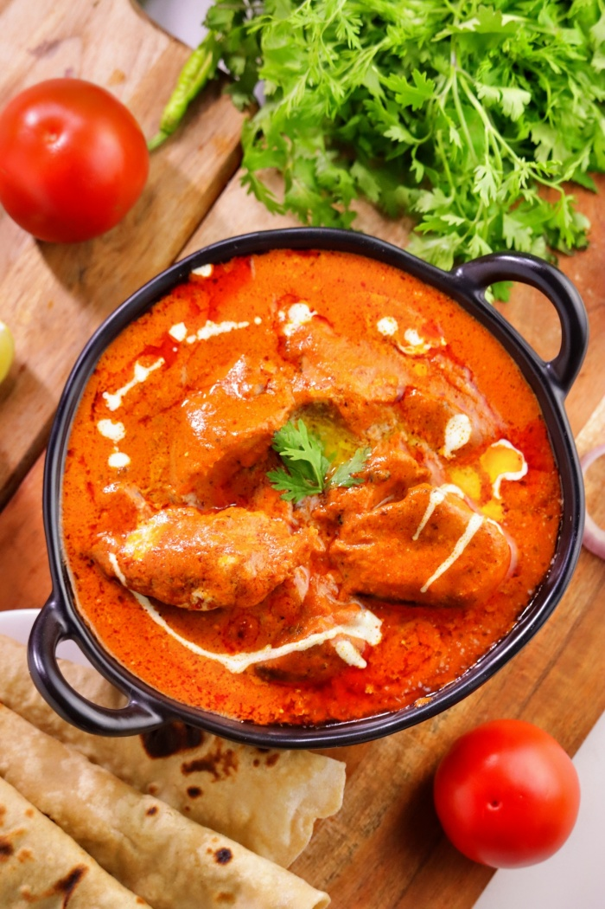
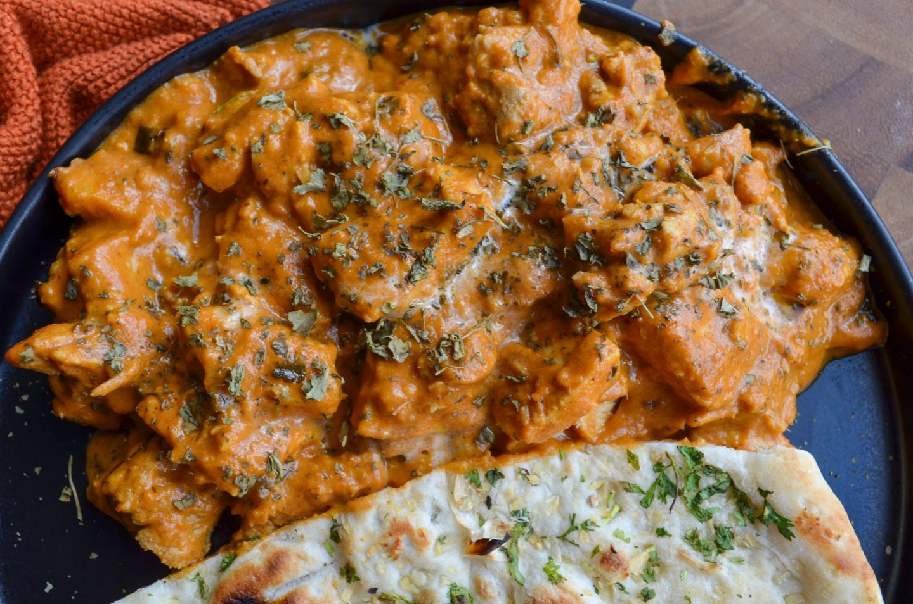

🥗 Non-Vegetarian | Main Course
A rich, creamy and iconic North Indian chicken curry

Butter Chicken (Murgh Makhani) Butter Chicken is a classic Indian dish made with marinated & grilled chicken (Tandoori chicken), simmered in a creamy tomato gravy/curry. The sauce is super silky, buttery, aromatic and mildly spicy. This lip-smacking and delicious dish is hugely popular among the Indian food lovers across the world.
Though this dish has a lot of similarities with Chicken Tikka Masala, both smell and taste very different. Originally, Butter Chicken is a mild dish, does not include onions and is cooked with butter. But tikka masala is spicy, hot, includes onions and is cooked in oil.


Store in an airtight container in the refrigerator for up to 2–3 days. Reheat with a little water to maintain consistency.
Calories: 402 kcal | Protein: 39.8g | Fat: 23.4g | Carbohydrates: 9.8g
Disclaimer: Values are approximate.Have a recipe request or feedback? Let me know!